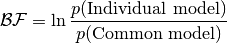

The results are given in form of a results.csv. Each line corresponds to the results for one gene. The results file is structured as follows:
| Gene ID | Bayes Factor | [Learnt covariance function parameters] |
The Gene ID is the ID given in the input files. The Bayes Factor is a log-score for model comparison of the individual model against the common model. The individual model assumes both samples (treatment and control) to be modelled individually by one Gaussian process each. In contrast the common model assumes both samples to be modelled by one Gaussian Process. Both likelihoods are computed and the score is created by contrasting the both likelihoods:

All plots are saved in a subfolder <outdir>/plots/